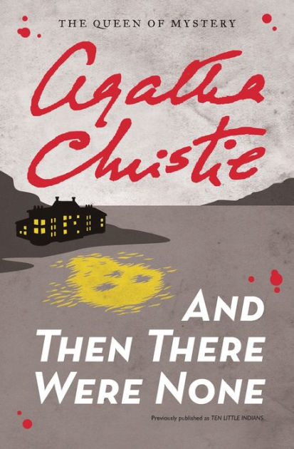
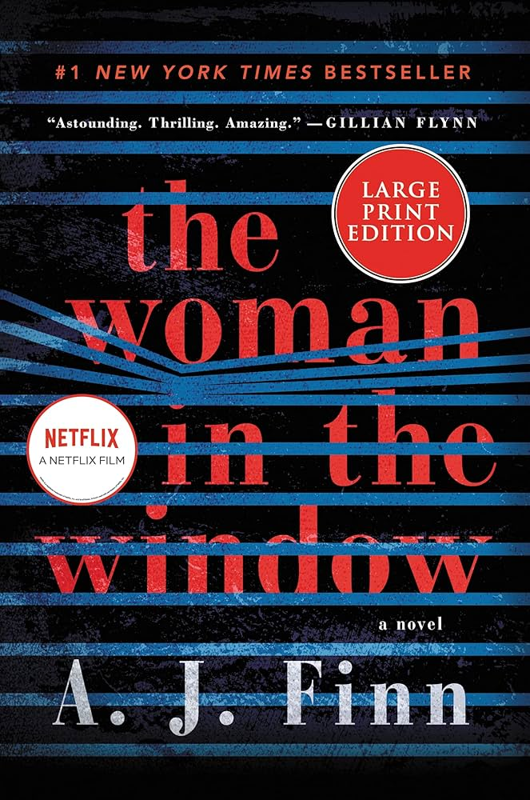
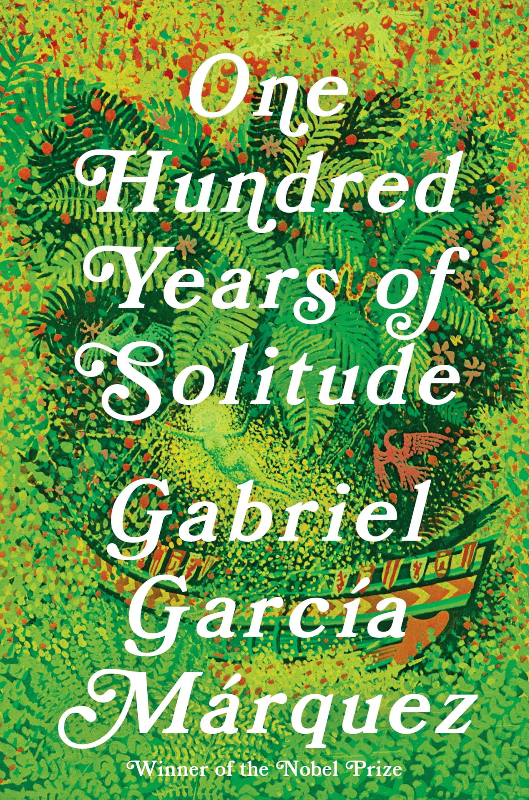

Manuel Recao
Get to know me a bit more :)
Trip
An incredible trip I did last summer was to Eastern Europe, in particular Bulgaria, Romania, and Serbia.
This trip lasted about two weeks and was done all by car, with Sofia, Bulgaria being the starting and ending point.
It was my first time in Eastern Europe and a post-soviet environment, so it was incredibly interesting and new to me.
The most memorable things from each country were: the ancient city of Plovdiv in Bulgaria, the Transfagarasan Highway in Romania, and the best meal of the entire trip in Belgrade, Serbia.
Favorite pet names list
- Guadalupe, nicknamed "Lupe" or "Lupita" - female dog
- Steven - grasshopper
- Alejandro - a blue eyed and slim white/black male cat
Link to my favorite restaurant
Le Relais de Venise
This restaurant only has one thing on its menu: l'entrecote wih Cafe de Paris sauce and frites.
You may think: "why would I go to a place with only one thing on the menu?" My answer: "Fine, miss out on it!"
The specialy sauce is buttery, aromatic and deliciously creamy. Their frites are cooked to perfection and crispy.
I love dipping the frites in the sauce and enjoying the unique french feel of the restaurant.
The best part? You get seconds! Did I mention a delicious salad also included as an appetizer? All for a fixed price of around $35 - not bad for NYC!
Wine and dessert selections are also available at an additional cost. I personally love the profiteroles to finish such an incredible meal.
Favorite food
Ok, it is not l'entrecote (and maybe not even my favorite dish since I love too many of them), but mac and cheese with hot dog wieners is a huge comfort food with me. I used to eat it often as a kid. I like the cheese to be mild and creamy and the hot dogs well cooked and almost crispy. I used to have it with some juice as a kid but now I'll have it with an ice cold beer.
Four favorite books
| Name |
Author |
Cover |
Summary |
| And Then There Were None |
Agatha Christe |

| Ten strangers are invited to a remote island, only to be killed off one by one in a chilling game of justice. |
| The Shining |
Stephen King |
| A family’s winter stay at an isolated hotel unravels into terror as supernatural forces drive the father into madness. |
| The Woman in the Window |
A.J. Finn |

| A reclusive woman believes she witnesses a crime through her window, but her grip on reality begins to unravel as the truth comes into question. |
| One Hundred Years of Solitude |
Gabriel Garcia
Marquez |

| A multi-generational saga of the Buendía family in the fictional town of Macondo, blending magical realism with the inescapable cycles of history, love, and loss. |